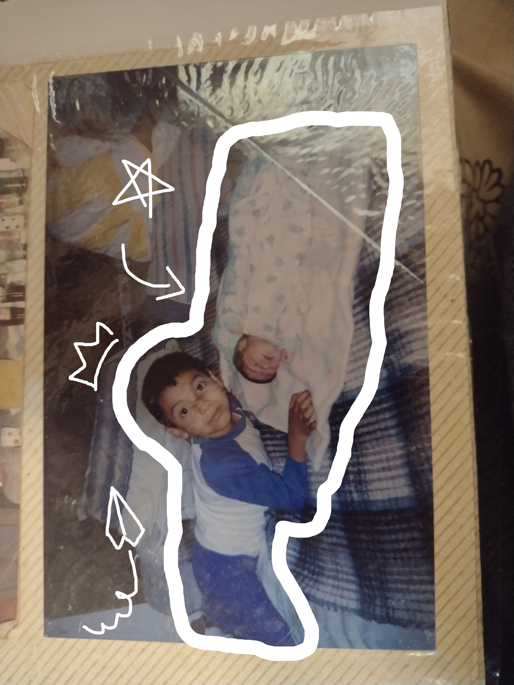
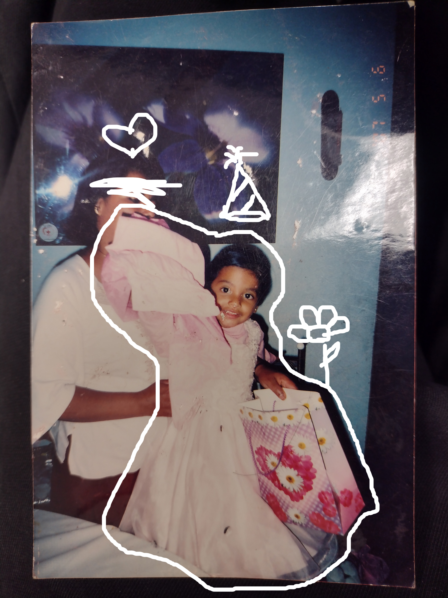
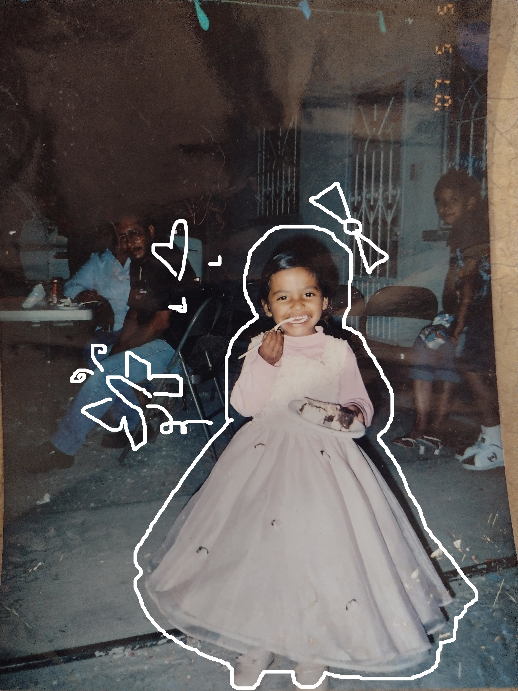
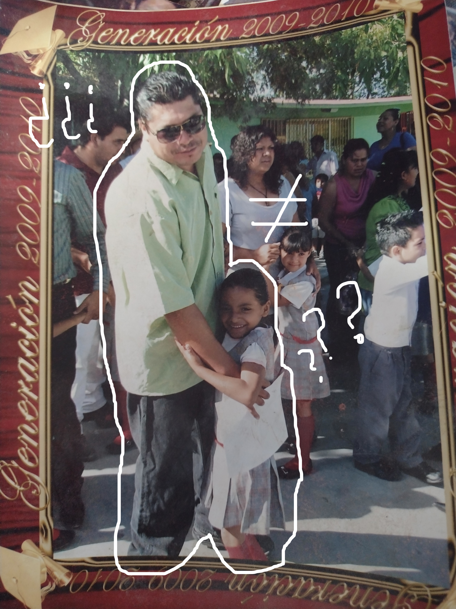
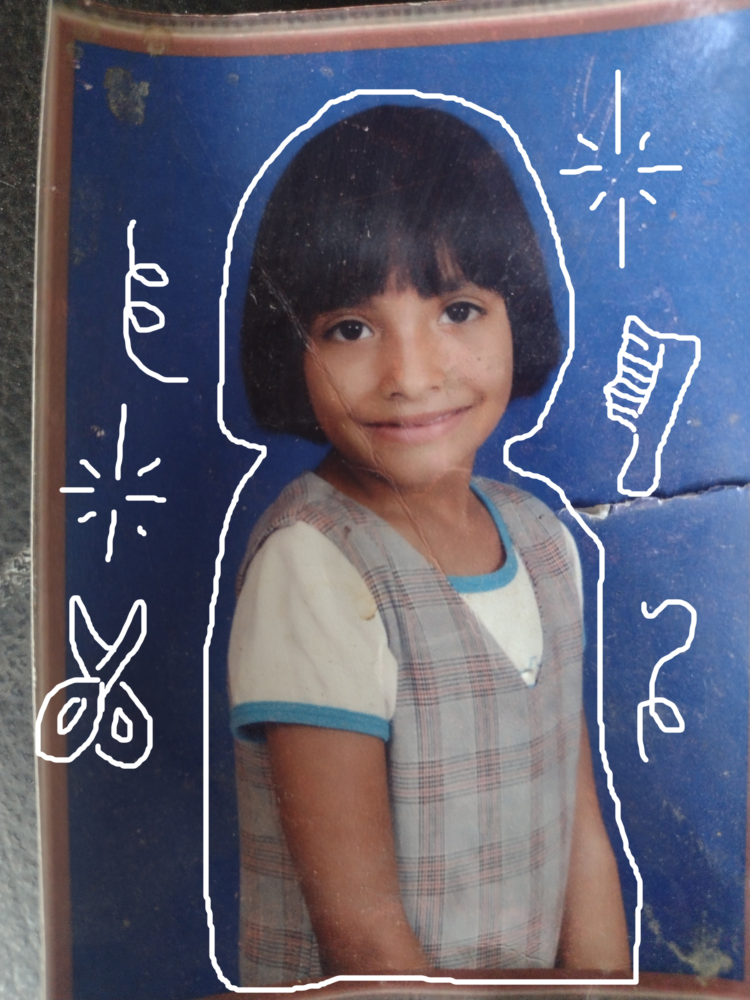
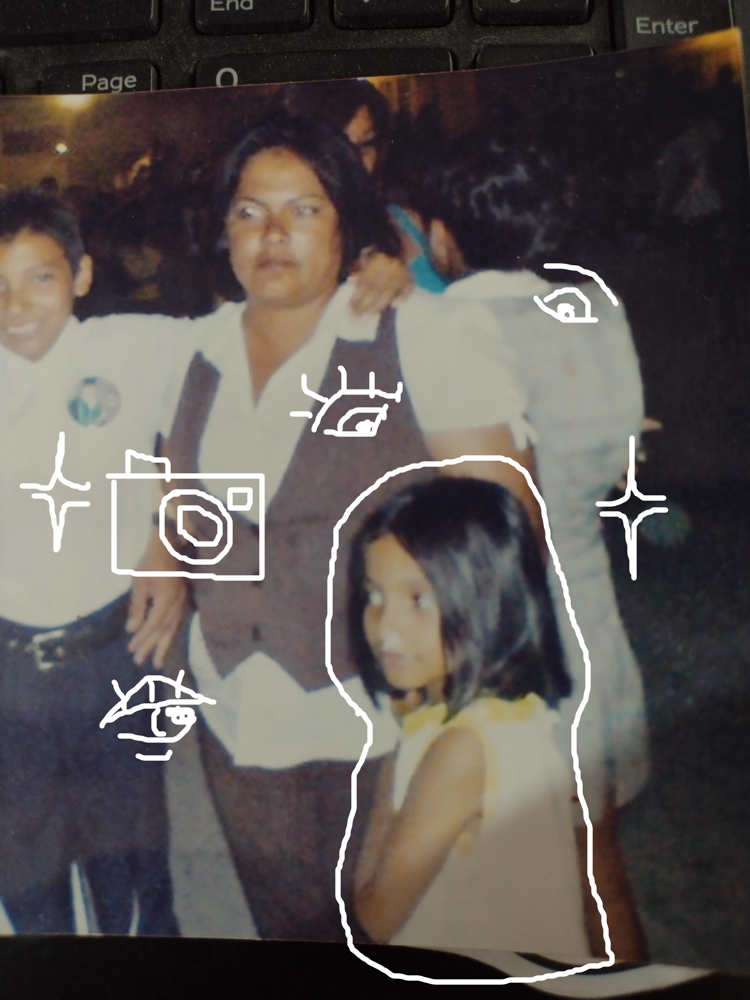
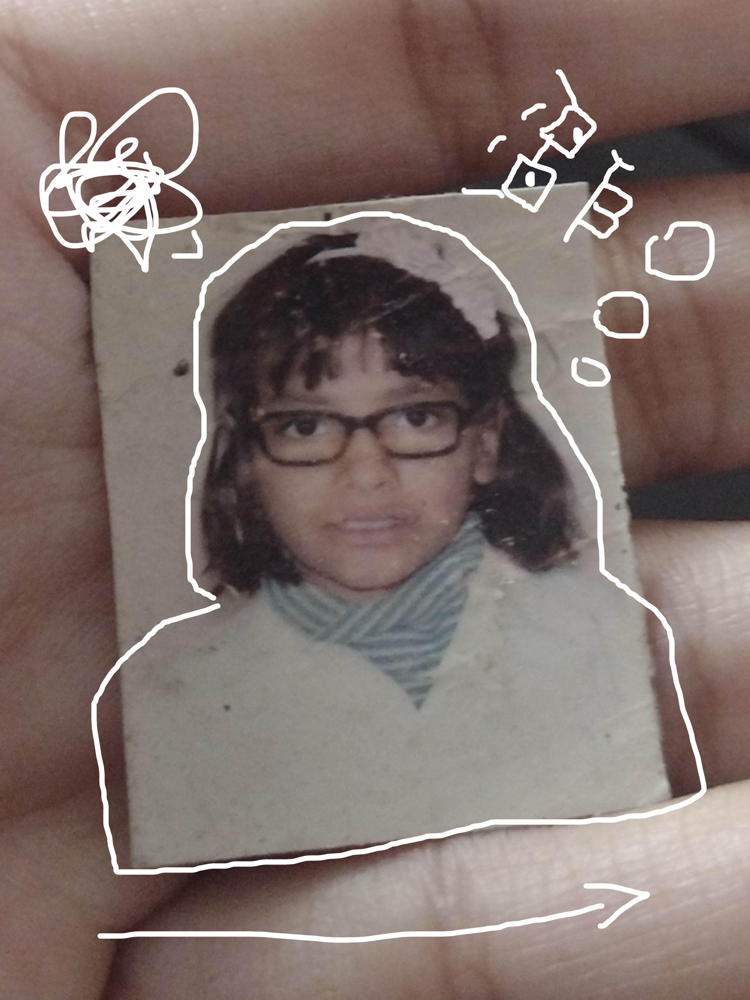
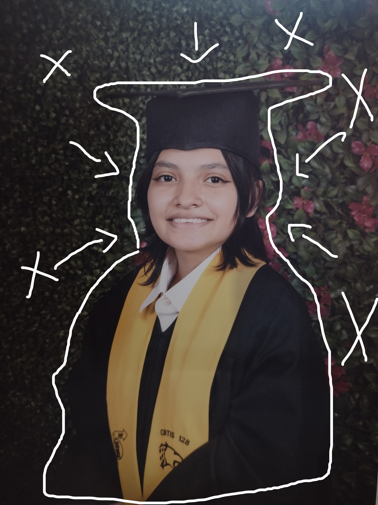
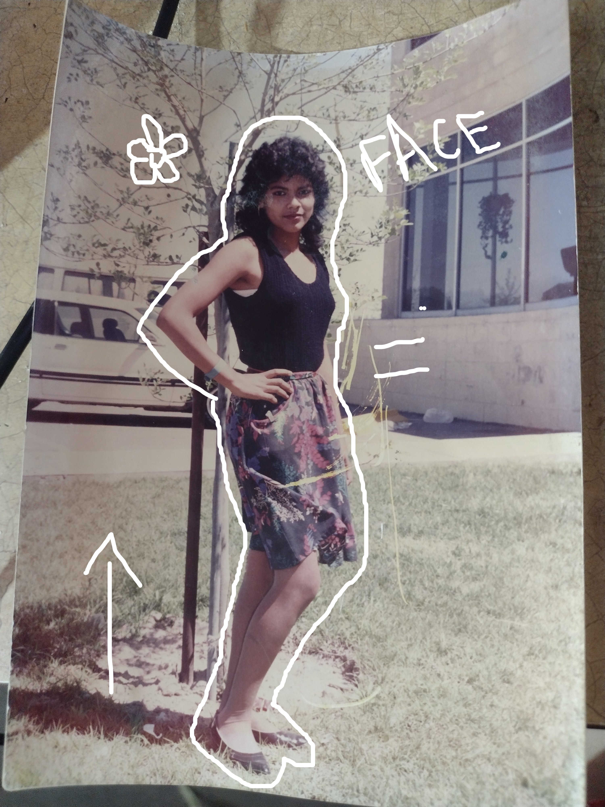

¿Por qué guardé esto?
Un proyecto que recupera fotografías personales—imperfectas, cotidianas—y las revisita para entender cómo cambia su significado emocional con el paso del tiempo.
Galería narrativa

Mi hombro raro
Una foto que guarda tensiones familiares y memorias corporales.

Toda era rosa
Recordar un instante desde otra edad lo vuelve más suave… o más duro.

Odio el pastel
Un gesto capturado que se convierte en símbolo con los años.

No me gusta marchar
Una declaración pequeña que cambia según el contexto.

No nos parecemos
Identidad familiar y las comparaciones que acompañan la infancia.

Cabeza de tazón
Pequeñas rutinas de cuidado que se recuerdan diferente al crecer.

Debí quedarme en casa
La foto que revive una sensación exacta del pasado.

Lentes feos
Una imagen que antes daba pena, ahora da ternura.

Me veo gorda
Una fotografía que abre diálogos sobre cuerpo y mirada.

Yo no soy ella
Distancias entre cómo nos ven y cómo nos vemos.